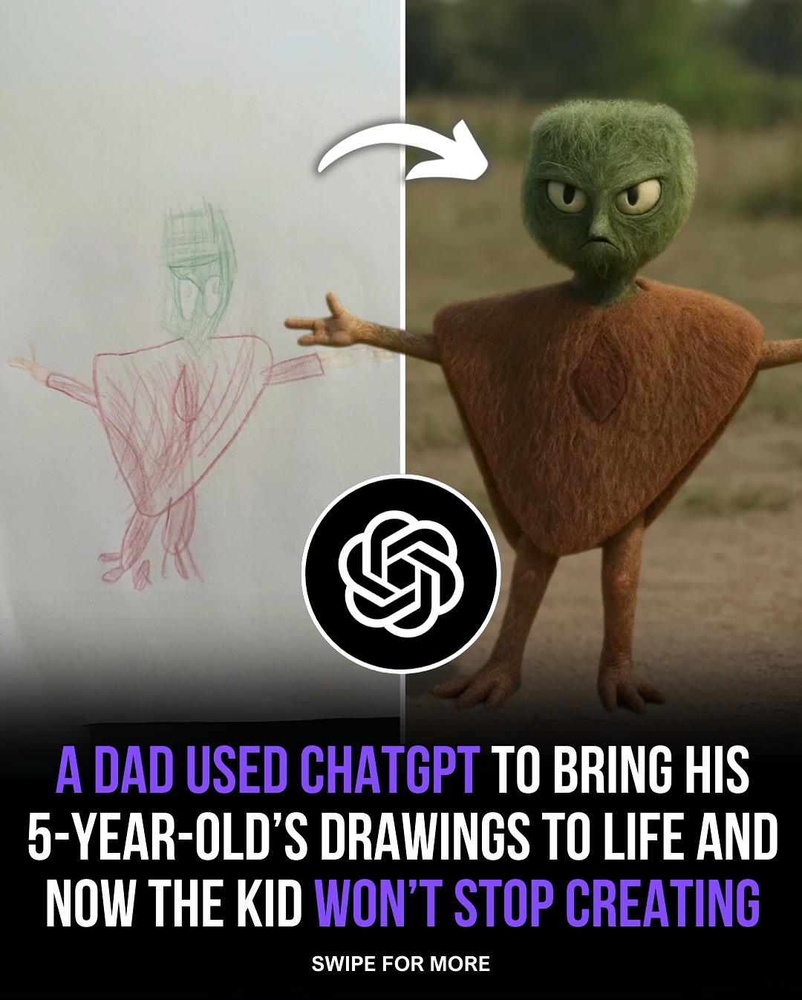
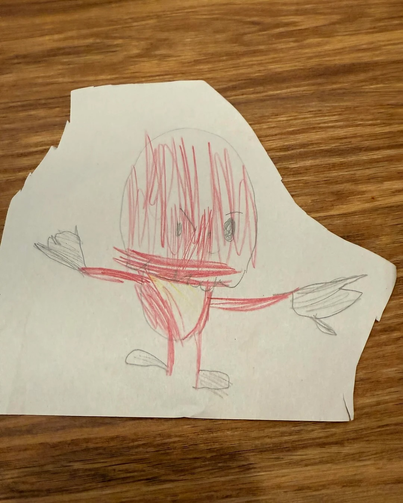
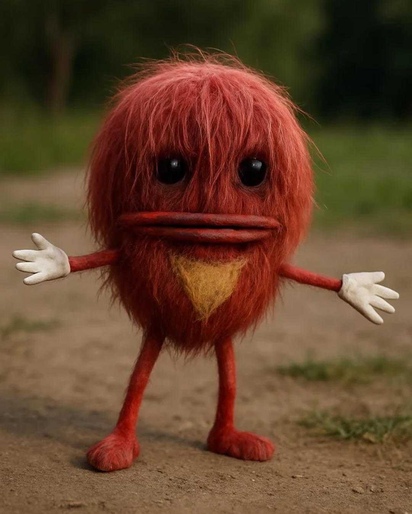
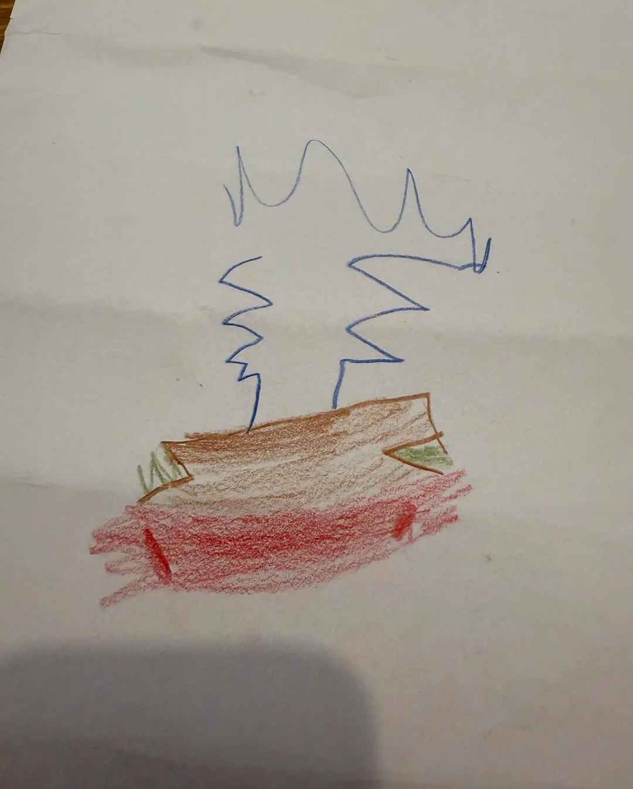
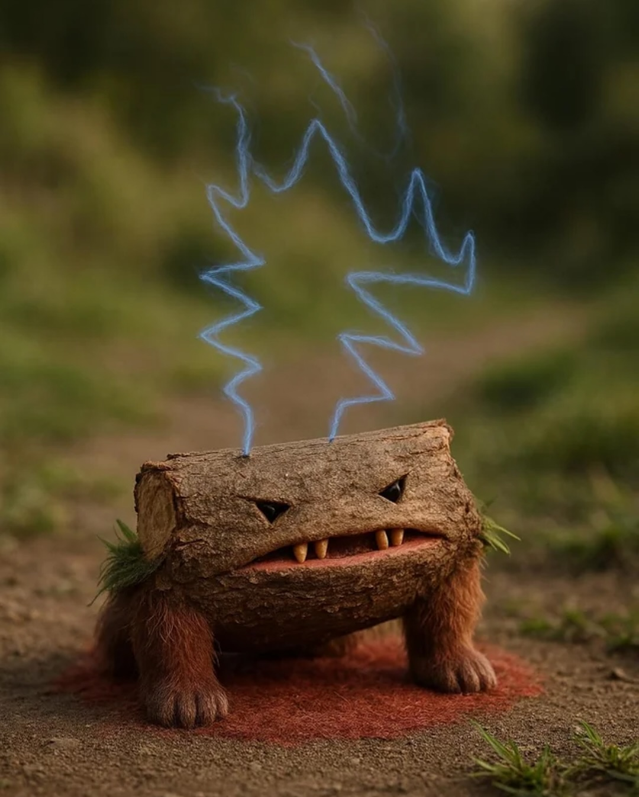
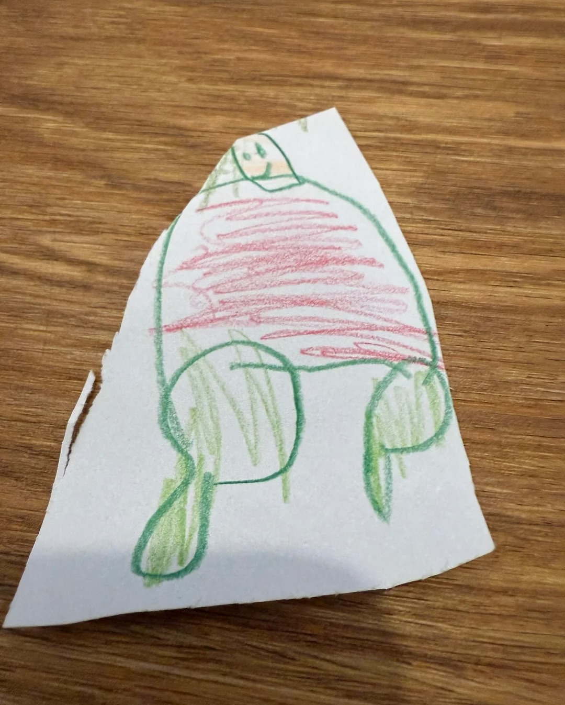
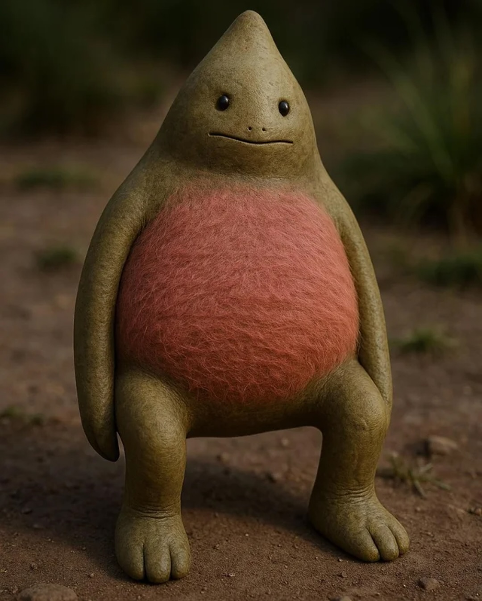
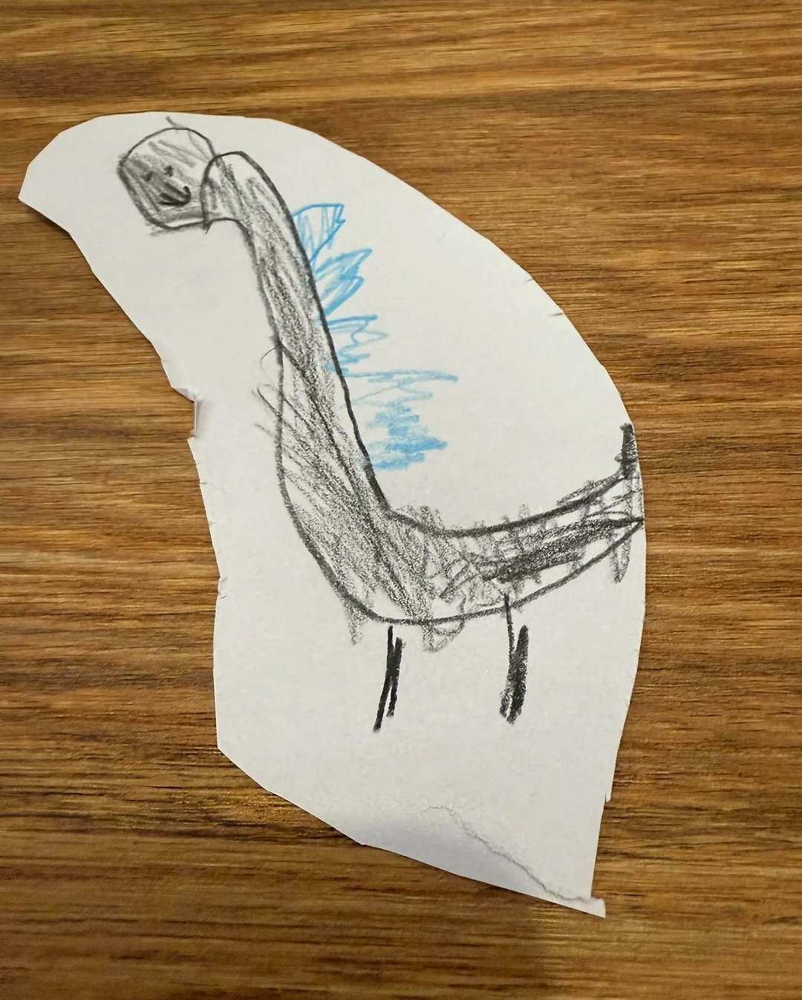
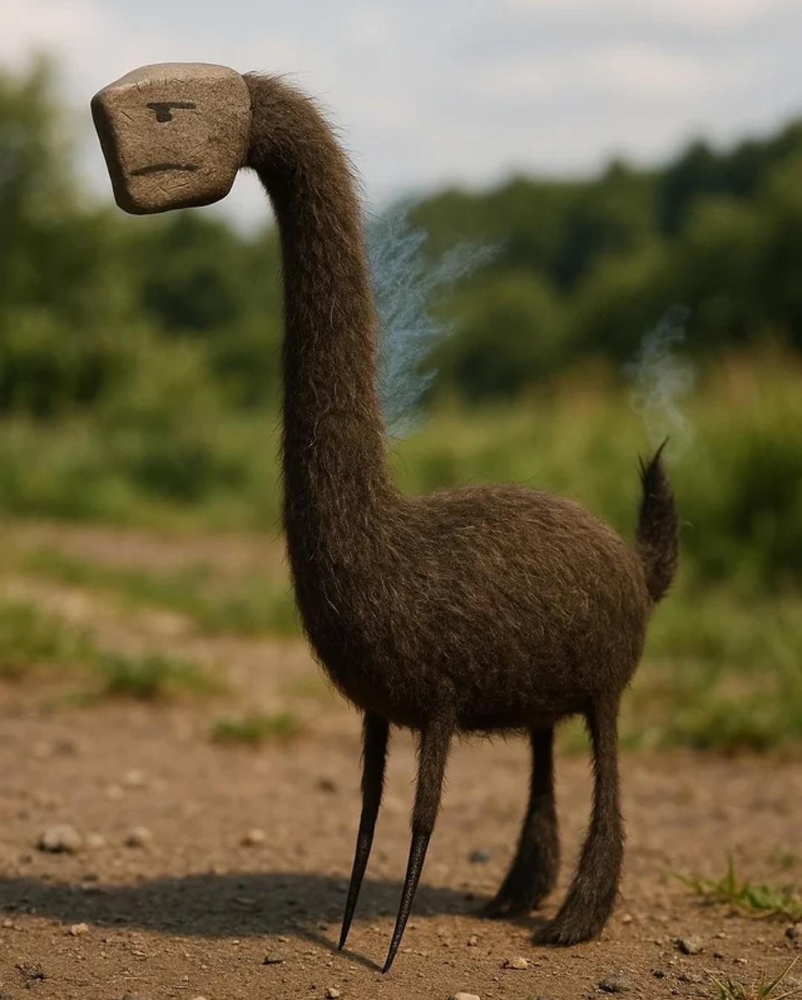

Instagram Post

The child became obsessed, running back and forth...
carousel (10 slides) (enriched by ClaudeClaw)
Caption
A dad casually started using ChatGPT to turn his 5-year-old son’s drawings into realistic, photo-style images — and it quickly sparked nonstop creativity.
The child became obsessed, running back and forth with new drawings, eager to see them brought to life.
Here’s the full prompt he used:
“Take this drawing created by my child and transform it into a photorealistic image or realistic 3D render. I don’t know what it’s supposed to be — it could be a creature, object, or something completely from their imagination. Keep the original shape, proportions, line lengths, and all imperfections exactly as they are in the drawing — including any slanted eyes, uneven lines, or strange markings. Do not correct, smooth out, or change any details of their design.
Make it look like this thing exists in the real world, with realistic textures (skin, fur, metal, etc.) and natural lighting. You can add realistic shadows and an environment or background that fits the feel of the drawing, but don’t change anything about the form or details of what they created. No pencil crayon textures or hand-drawn styles — this must look like a photo or CGI render, but staying true to their imagination.”
______
➡️Want to stay ahead in AI?
We break it all down — tools, trends, and everything changing the game.
Free newsletter. Link in bio.
1
A DAD USED CHATGPT TO BRING HIS 5-YEAR-OLD'S DRAWINGS TO LIFE AND NOW THE KID WON'T STOP CREATING SWIPE FOR MORE
The image is split, showing a child's drawing of a figure with a green head and red body on white paper on the left, and a 3D rendered character resembling the drawing with a green furry head and brown body standing outdoors on the right, with a curved arrow pointing from the drawing to the rendered character.
2
A child's drawing of a red, abstract, humanoid figure with outstretched arms is cut out and placed on a wooden surface.
3
A red, furry, humanoid creature with large black eyes, a wide mouth, thin limbs, white gloved hands, and a yellow triangular patch on its chest stands on a dirt path with green foliage in the background.
4
A child's drawing on white paper depicts a red and brown object with blue wavy lines extending upwards.
5
A log-like creature with a face, furry legs, and grass tufts stands on a dirt path, emitting blue lightning from its top.
6
A child's drawing of a turtle with a red shell and green limbs is on a piece of irregularly cut white paper, resting on a wooden surface.
7
< > . . . . . . . . . . . . . . . . . . . . . . . . . . . . . . . . . . . . .
8
A child's drawing of a gray dinosaur-like creature with blue spikes on its back is cut out from white paper and lies on a wooden surface.
9
A dark, furry creature with a long neck, thin legs, and a rectangular stone head carved with a sad face stands on a dirt path, with wisps of blue smoke emanating from its neck and tail, against a blurred green natural background.
10
DADDY
A child's drawing on white paper features the word "DADDY" in a blue box, a red heart, a red smiley face, and a colorful geometric shape resembling a pendant.
All slides







